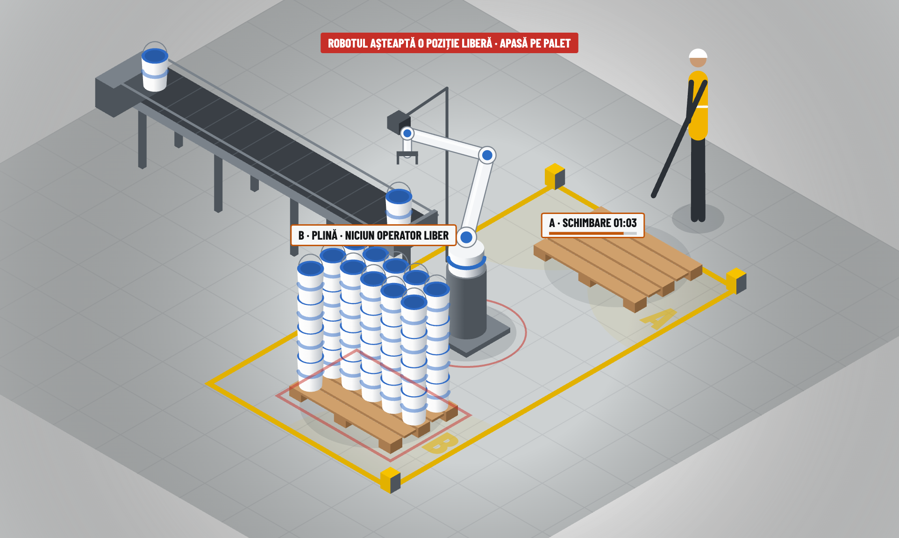
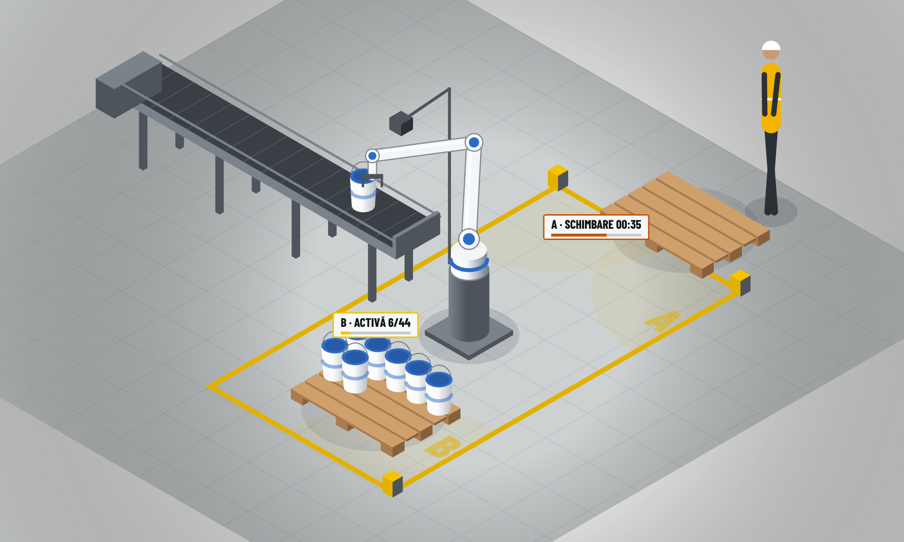

PaletScore ■
7 min 22 s
pe oră robotul așteaptă un palet liber, dacă schimbarea durează 7 minute.
PaletScore ■
Utilizator
Dintr-o fabrică alimentară care ambalează în găleți. Își testează linia pe telefon, gratuit, înainte să ceară o ofertă.
Client
Plătește aplicația din bugetul de promovare. Primește cereri care vin deja cu datele liniei, așa că evaluarea tehnică pornește mai repede.
1Fabrica își testează linia în PaletScore.
2Tech-Con primește cererea, cu datele liniei.
3Urmează evaluarea, demonstrația și oferta pentru celulă.
PaletScore ■
Pentru 430 de găleți pe oră
6:09
minute e cea mai lungă schimbare de palet care mai atinge obiectivul
Cu 30 de secunde în plus: 401 găleți
440
330
220
2 min
6 min
10 min
14 min
obiectiv: 430
+30 s: 401
PaletScore ■
De obicei
Cu PaletScore
O broșură cu cifrele de la PURATOS.
Testul liniei fabricii, cu datele ei.
Un calculator de economii care arată doar câștiguri.
Arată și unde robotul nu ajută: un robot mai rapid ar aduce doar 4 găleți în plus.
O vizită tehnică pornită de la zero.
Cererea vine cu măsurătorile deja făcute.
Pentru Tech-Con, într-un an
310.800 €
profit net la 20 de celule livrate
PaletScore ■
razvanalecse.github.io/paletscore
Pentru Tech-Con: campanie în ianuarie–martie, evaluări în aprilie–iunie, comenzi până în august.
